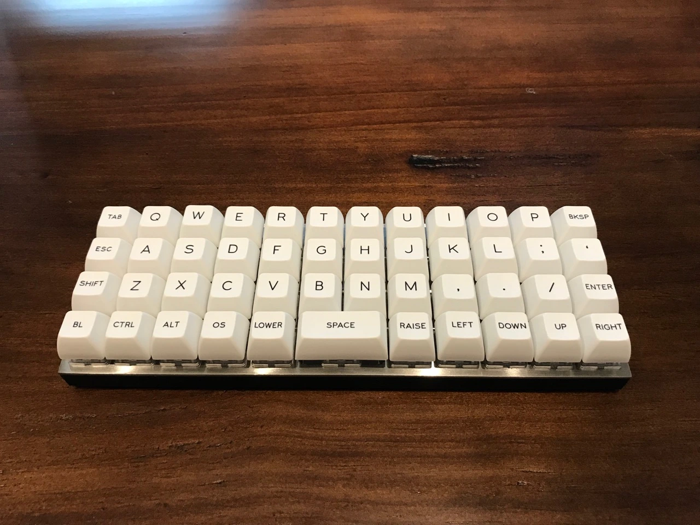
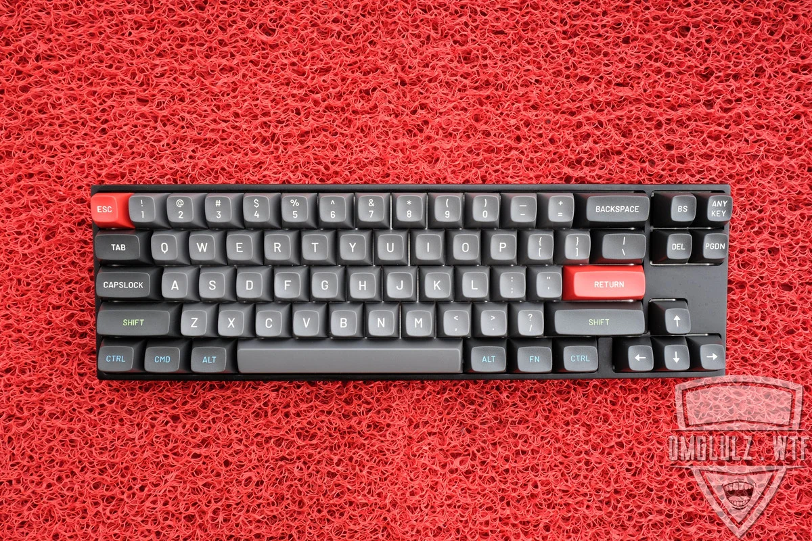
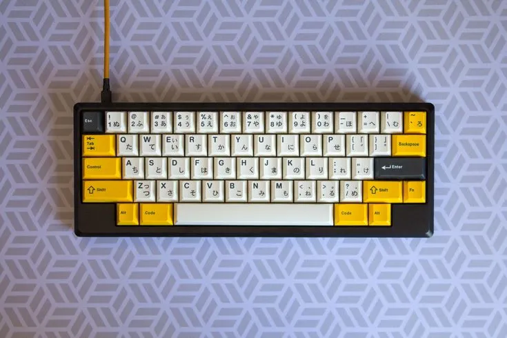
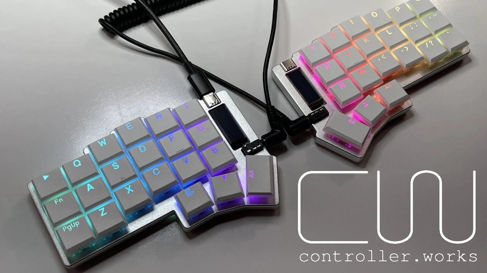

Formato
Ergonomía
Distribución
Perfil
Teclados más visitados

Sofle
Es un teclado mecánico personalizado dividido, diseñado para proporcionar una experiencia ergonómica al usuario.

Zeal60
Es un teclado mecánico personalizable diseñado para entusiastas

Planck
Es un teclado mecánico personalizado dividido, diseñado para proporcionar una experiencia ergonómica al usuario.

Varmilo VA68M
Es un teclado mecánico personalizado dividido, diseñado para proporcionar una experiencia ergonómica al usuario.

Tokyo60
Es un teclado mecánico personalizado dividido, diseñado para proporcionar una experiencia ergonómica al usuario.

Corne
Es un teclado mecánico personalizado dividido, diseñado para proporcionar una experiencia ergonómica al usuario.